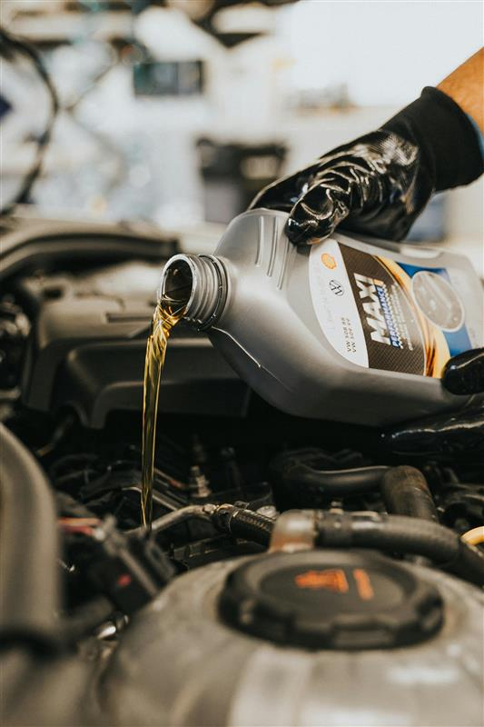

Changing your car's oil is simple and helps keep your engine running smoothly. Follow these steps to do it yourself.
1. Prepare Your Tools - You will need new oil, an oil filter, a wrench, a funnel, a drain pan, and gloves. Park your car on a flat surface and let the engine cool.
2. Drain the Old Oil - Place the drain pan under the oil plug. Use a wrench to remove the plug and let the oil drain completely.
3. Replace the Oil Filter - Unscrew the old filter and replace it with a new one. Apply a little oil to the rubber seal before tightening.
4. Add New Oil - Put the drain plug back. Use a funnel to pour new oil into the engine. Check the oil level with the dipstick.
5. Dispose of Old Oil - Take the used oil to a recycling center.
Now your car is ready to go!

Checking your car's tire pressure is important for safety and fuel efficiency. Follow these simple steps to do it yourself.
1. Get a Tire Pressure Gauge - You can use a manual or digital gauge. Check your car's manual or the sticker on the driver's door for the correct pressure (PSI).
2. Check When Tires Are Cold - Tire pressure changes with temperature. It's best to check in the morning or when the car has been parked for a few hours.
3. Remove the Valve Cap - Unscrew the cap from the tire's air valve. Keep it in a safe place.
4. Measure the Pressure - Press the gauge onto the valve stem. The gauge will show the tire's current pressure.
5. Adjust if Needed - If the pressure is too low, add air at a gas station or with an air pump. If it's too high, release some air.
6. Put the Valve Cap Back - Secure the cap to protect the valve.
Check your tire pressure regularly to keep your car safe!